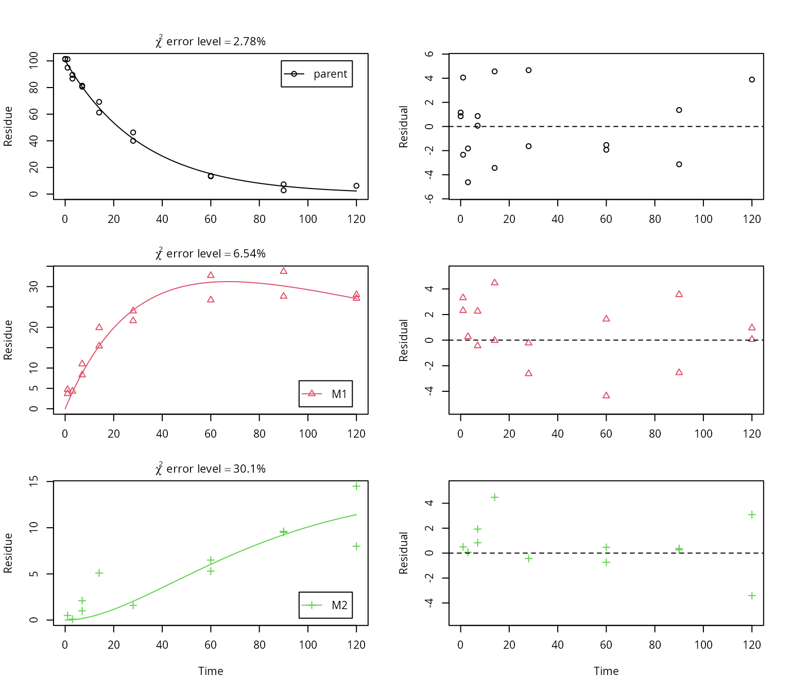

mkin.RmdWissenschaftlicher Berater, Kronacher Str. 12, 79639 Grenzach-Wyhlen, Germany
Privatdozent at the University of Bremen
In the regulatory evaluation of chemical substances like plant protection products (pesticides), biocides and other chemicals, degradation data play an important role. For the evaluation of pesticide degradation experiments, detailed guidance has been developed, based on nonlinear optimisation. The R add-on package mkin implements fitting some of the models recommended in this guidance from within R and calculates some statistical measures for data series within one or more compartments, for parent and metabolites.
library("mkin", quietly = TRUE)
# Define the kinetic model
m_SFO_SFO_SFO <- mkinmod(parent = mkinsub("SFO", "M1"),
M1 = mkinsub("SFO", "M2"),
M2 = mkinsub("SFO"),
use_of_ff = "max", quiet = TRUE)
# Produce model predictions using some arbitrary parameters
sampling_times = c(0, 1, 3, 7, 14, 28, 60, 90, 120)
d_SFO_SFO_SFO <- mkinpredict(m_SFO_SFO_SFO,
c(k_parent = 0.03,
f_parent_to_M1 = 0.5, k_M1 = log(2)/100,
f_M1_to_M2 = 0.9, k_M2 = log(2)/50),
c(parent = 100, M1 = 0, M2 = 0),
sampling_times)
# Generate a dataset by adding normally distributed errors with
# standard deviation 3, for two replicates at each sampling time
d_SFO_SFO_SFO_err <- add_err(d_SFO_SFO_SFO, reps = 2,
sdfunc = function(x) 3,
n = 1, seed = 123456789 )
# Fit the model to the dataset
f_SFO_SFO_SFO <- mkinfit(m_SFO_SFO_SFO, d_SFO_SFO_SFO_err[[1]], quiet = TRUE)
# Plot the results separately for parent and metabolites
plot_sep(f_SFO_SFO_SFO, lpos = c("topright", "bottomright", "bottomright"))
Many approaches are possible regarding the evaluation of chemical degradation data.
The mkin package (Ranke 2019) implements the approach recommended in the kinetics report provided by the FOrum for Co-ordination of pesticide fate models and their USe (FOCUS Work Group on Degradation Kinetics 2006, 2014) for simple decline data series, data series with transformation products, commonly termed metabolites, and for data series for more than one compartment. It is also possible to include back reactions, so equilibrium reactions and equilibrium partitioning can be specified, although this oftentimes leads to an overparameterisation of the model.
When the first mkin code was published in 2010, the most commonly used tools for fitting more complex kinetic degradation models to experimental data were KinGUI (Schäfer et al. 2007), a MATLAB based tool with a graphical user interface that was specifically tailored to the task and included some output as proposed by the FOCUS Kinetics Workgroup, and ModelMaker, a general purpose compartment based tool providing infrastructure for fitting dynamic simulation models based on differential equations to data.
The code was first uploaded to the BerliOS platform. When this was taken down, the version control history was imported into the R-Forge site (see e.g. the initial commit on 11 May 2010), where the code is still occasionally updated.
At that time, the R package FME (Flexible Modelling Environment) (Soetaert and Petzoldt 2010) was already available, and provided a good basis for developing a package specifically tailored to the task. The remaining challenge was to make it as easy as possible for the users (including the author of this vignette) to specify the system of differential equations and to include the output requested by the FOCUS guidance, such as the relative standard deviation that has to be assumed for the residuals, such that the \(\chi^2\) goodness-of-fit test as defined by the FOCUS kinetics workgroup would pass using an significance level \(\alpha\) of 0.05. This relative error, expressed as a percentage, is often termed \(\chi^2\) error level or similar.
Also, mkin introduced using analytical solutions for parent only kinetics for improved optimization speed. Later, Eigenvalue based solutions were introduced to mkin for the case of linear differential equations (i.e. where the FOMC or DFOP models were not used for the parent compound), greatly improving the optimization speed for these cases. This, however, has become somehow obsolete, as the use of compiled code described below gives even smaller execution times.
The possibility to specify back-reactions and a biphasic model (SFORB) for metabolites were present in mkin from the very beginning.
Soon after the publication of mkin, two derived tools were published, namely KinGUII (available from Bayer Crop Science) and CAKE (commissioned to Tessella by Syngenta), which added a graphical user interface (GUI), and added fitting by iteratively reweighted least squares (IRLS) and characterisation of likely parameter distributions by Markov Chain Monte Carlo (MCMC) sampling.
CAKE focuses on a smooth use experience, sacrificing some flexibility in the model definition, originally allowing only two primary metabolites in parallel. The current version 3.3 of CAKE release in March 2016 uses a basic scheme for up to six metabolites in a flexible arrangement, but does not support back-reactions (non-instantaneous equilibria) or biphasic kinetics for metabolites.
KinGUI offers an even more flexible widget for specifying complex kinetic models. Back-reactions (non-instanteneous equilibria) were supported early on, but until 2014, only simple first-order models could be specified for transformation products. Starting with KinGUII version 2.1, biphasic modelling of metabolites was also available in KinGUII.
A further graphical user interface (GUI) that has recently been brought to a decent degree of maturity is the browser based GUI named gmkin. Please see its documentation page and manual for further information.
A comparison of scope, usability and numerical results obtained with these tools has been recently been published by Ranke, Wöltjen, and Meinecke (2018).
Currently (July 2019), the main features available in mkin which are not present in KinGUII or CAKE, are the speed increase by using compiled code when a compiler is present, parallel model fitting on multicore machines using the mmkin function, and the estimation of parameter confidence intervals based on transformed parameters.
In addition, the possibility to use two alternative error models to constant variance have been integrated. The variance by variable error model introduced by Gao et al. (2011) has been available via an iteratively reweighted least squares (IRLS) procedure since mkin version 0.9-22. With release 0.9.49.5, the IRLS algorithm has been replaced by direct or step-wise maximisation of the likelihood function, which makes it possible not only to fit the variance by variable error model but also a two-component error model inspired by error models developed in analytical chemistry.
For rate constants, the log transformation is used, as proposed by Bates and Watts (1988, 77, 149). Approximate intervals are constructed for the transformed rate constants (compare Bates and Watts 1988, 135), i.e. for their logarithms. Confidence intervals for the rate constants are then obtained using the appropriate backtransformation using the exponential function.
In the first version of mkin allowing for specifying models using formation fractions, a home-made reparameterisation was used in order to ensure that the sum of formation fractions would not exceed unity.
This method is still used in the current version of KinGUII (v2.1 from April 2014), with a modification that allows for fixing the pathway to sink to zero. CAKE uses penalties in the objective function in order to enforce this constraint.
In 2012, an alternative reparameterisation of the formation fractions was proposed together with René Lehmann (Ranke and Lehmann 2012), based on isometric logratio transformation (ILR). The aim was to improve the validity of the linear approximation of the objective function during the parameter estimation procedure as well as in the subsequent calculation of parameter confidence intervals.
In the first attempt at providing improved parameter confidence intervals introduced to mkin in 2013, confidence intervals obtained from FME on the transformed parameters were simply all backtransformed one by one to yield asymetric confidence intervals for the backtransformed parameters.
However, while there is a 1:1 relation between the rate constants in the model and the transformed parameters fitted in the model, the parameters obtained by the isometric logratio transformation are calculated from the set of formation fractions that quantify the paths to each of the compounds formed from a specific parent compound, and no such 1:1 relation exists.
Therefore, parameter confidence intervals for formation fractions obtained with this method only appear valid for the case of a single transformation product, where only one formation fraction is to be estimated, directly corresponding to one component of the ilr transformed parameter.
The confidence intervals obtained by backtransformation for the cases where a 1:1 relation between transformed and original parameter exist are considered by the author of this vignette to be more accurate than those obtained using a re-estimation of the Hessian matrix after backtransformation, as implemented in the FME package.
The standard output of many nonlinear regression software packages includes the results from a test for significant difference from zero for all parameters. Such a test is also recommended to check the validity of rate constants in the FOCUS guidance (FOCUS Work Group on Degradation Kinetics 2014, 96ff).
It has been argued that the precondition for this test, i.e. normal distribution of the estimator for the parameters, is not fulfilled in the case of nonlinear regression (Ranke and Lehmann 2015). However, this test is commonly used by industry, consultants and national authorities in order to decide on the reliability of parameter estimates, based on the FOCUS guidance mentioned above. Therefore, the results of this one-sided t-test are included in the summary output from mkin.
As it is not reasonable to test for significant difference of the transformed parameters (e.g. \(log(k)\)) from zero, the t-test is calculated based on the model definition before parameter transformation, i.e. in a similar way as in packages that do not apply such an internal parameter transformation. A note is included in the mkin output, pointing to the fact that the t-test is based on the unjustified assumption of normal distribution of the parameter estimators.
Bates, D., and D. Watts. 1988. Nonlinear Regression and Its Applications. Wiley-Interscience.
FOCUS Work Group on Degradation Kinetics. 2006. Guidance Document on Estimating Persistence and Degradation Kinetics from Environmental Fate Studies on Pesticides in Eu Registration. Report of the Focus Work Group on Degradation Kinetics. http://esdac.jrc.ec.europa.eu/projects/degradation-kinetics.
———. 2014. Generic Guidance for Estimating Persistence and Degradation Kinetics from Environmental Fate Studies on Pesticides in Eu Registration. 1.1 ed. http://esdac.jrc.ec.europa.eu/projects/degradation-kinetics.
Gao, Z., J.W. Green, J. Vanderborght, and W. Schmitt. 2011. “Improving Uncertainty Analysis in Kinetic Evaluations Using Iteratively Reweighted Least Squares.” Journal. Environmental Science and Technology 45: 4429–37.
Ranke, J. 2019. ‘mkin‘: Kinetic Evaluation of Chemical Degradation Data. https://CRAN.R-project.org/package=mkin.
Ranke, J., and R. Lehmann. 2012. “Parameter Reliability in Kinetic Evaluation of Environmental Metabolism Data - Assessment and the Influence of Model Specification.” In SETAC World 20-24 May. Berlin.
———. 2015. “To T-Test or Not to T-Test, That Is the Question.” In XV Symposium on Pesticide Chemistry 2-4 September 2015. Piacenza. http://chem.uft.uni-bremen.de/ranke/posters/piacenza_2015.pdf.
Ranke, Johannes, Janina Wöltjen, and Stefan Meinecke. 2018. “Comparison of Software Tools for Kinetic Evaluation of Chemical Degradation Data.” Environmental Sciences Europe 30 (1): 17. https://doi.org/10.1186/s12302-018-0145-1.
Schäfer, D., B. Mikolasch, P. Rainbird, and B. Harvey. 2007. “KinGUI: A New Kinetic Software Tool for Evaluations According to FOCUS Degradation Kinetics.” In Proceedings of the Xiii Symposium Pesticide Chemistry, edited by Del Re A. A. M., Capri E., Fragoulis G., and Trevisan M., 916–23. Piacenza.
Soetaert, Karline, and Thomas Petzoldt. 2010. “Inverse Modelling, Sensitivity and Monte Carlo Analysis in R Using Package FME.” Journal of Statistical Software 33 (3): 1–28. http://www.jstatsoft.org/v33/i03/.